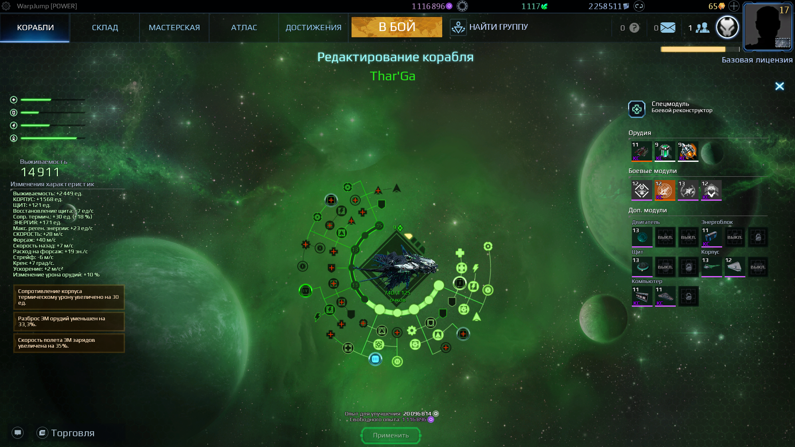

Штурмовик Эллидиума Thar'Ga лучше всего раскрывает себя с Генератором сингулярности за счёт высокой скорости поворотов. Здесь представленна сборка со спецмодулем кристаллический голод. Используя его штурмовик способен наносить колоссальный урон за малый промежуток времени (фоточка будет)
